3.4 Cableado - Motores
Tenemos el Robodyn, el escudo Protoboard, cables, el driver motor B6612FNG, el 7404 y una R10k
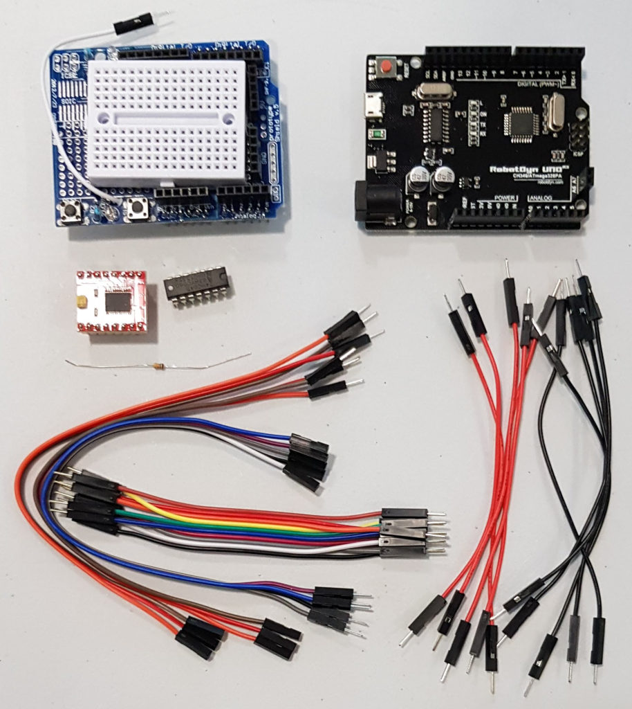
Fuente: https://mclon.org Maria L CC-BY-SA
Recuerda que la placa protoboard, los agujeros están conectados verticalmente a ambos lados, es decir lo rojo está conectado:
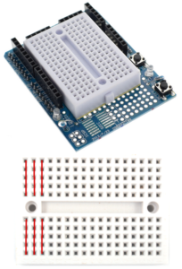
Fuente: https://mclon.org Maria L CC-BY-SA
En https://mclon.org/electronica/protoshield/ tienes unos consejos para realizar correctamente las conexiones.
3.4.1 Driver motor B6612FNG y 7404
Vamos a conectar este esquema
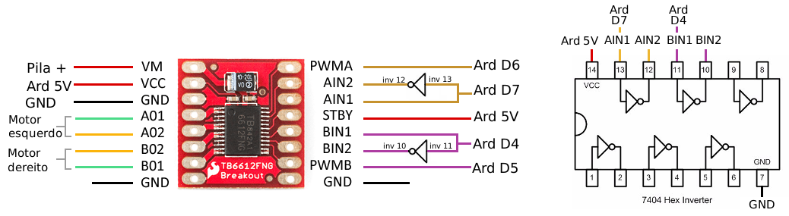
Fuente: https://mclon.org Maria L CC-BY-SA
Conecta los chips dejando dos columnas libres tal y como indica la figura, y conectamos Vcc y GND en la columna libre de la izquierda:
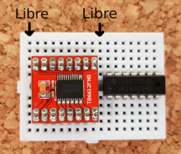
Fuente: https://mclon.org Maria L CC-BY-SA
Ponemos las conexiones de alimentación de los dos chips
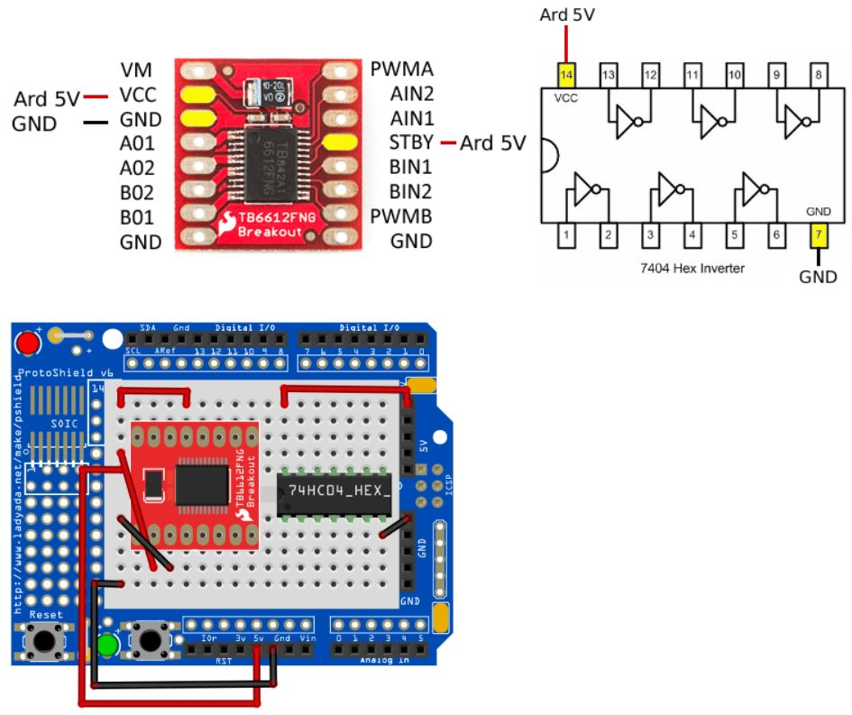
Fuente: https://mclon.org Maria L CC-BY-SA
Y ahora conectamos los pines de velocidad y dirección:
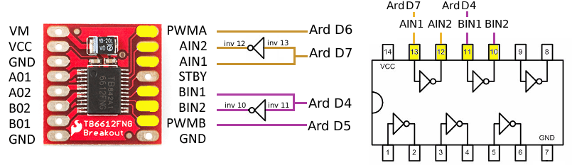
Fuente: https://mclon.org Maria L CC-BY-SA
Es decir, estos cables que indican en la siguiente figura :
ATENCIÓN, no se han dibujado las conexiones anteriores, para simplificar los dibujos, es decir ,no quites los cables anteriores
Primero el motor A
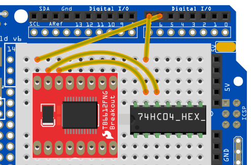
Fuente: https://mclon.org Maria L CC-BY-SA
Y luego el motor B
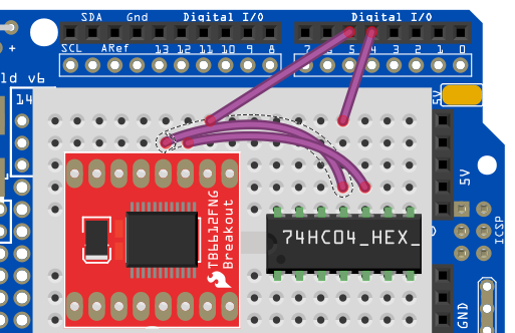
Fuente: https://mclon.org Maria L CC-BY-SA
Ahora conectamos los motores OJO CON LA POLARIDAD si te equivocas, el motor girará al revés :
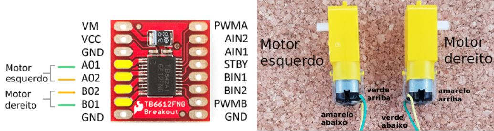
Al alimentar mClon con PowerBank, la tensión de la pila le llega diréctamente al Arduino Robodyn, luego alimentamos Vm con los 5V del Arduino ( Vcc ya estaba a 5V )
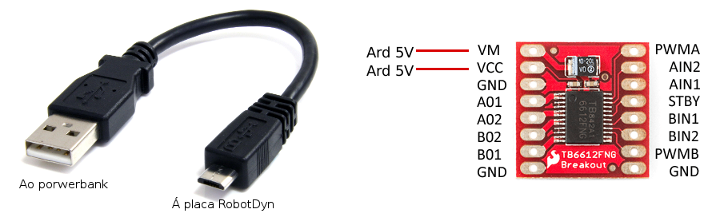
Luego las conexiones quedan así :
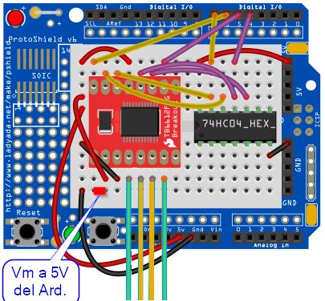

mClon por https://mclon.org bajo licencia Creative Commons Reconocimiento-CompartirIgual 4.0 Internacional License.